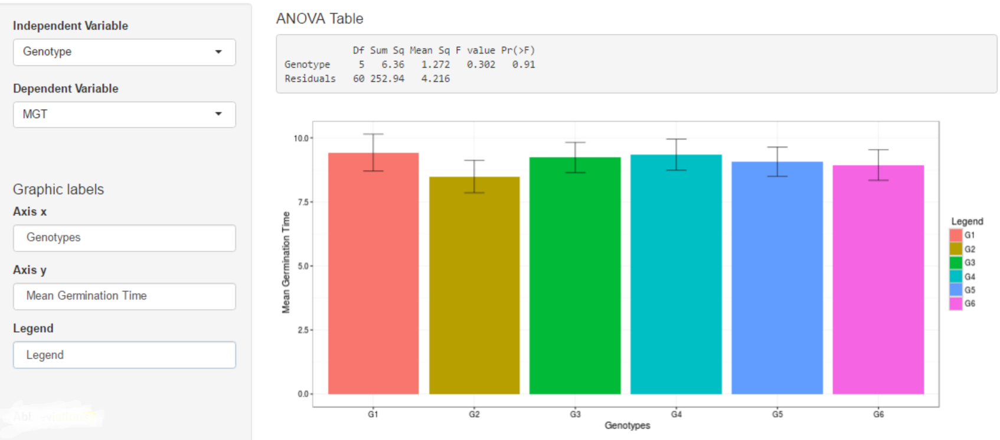

5.4 Statistical analysis
In this tab, the app perform a unifactor variance analysis, calculate the statistical description of the factor, the mean differences through three mean test: Tukey, Student Newman Keuls and Duncan and made the graphic for the chosen variable.

Figure 5.5: Statitical analysis with ANOVA and mean comparison test
Remember, the independiente variables will be the factor in your field book and the dependent variable will be any of the eleven of germination variables. Automatically the app will generate the graph for the variable chosen and give the mean comparison test. The axis label can be edited manually filling the case in the “Graphics labels” section. The bar graphs represent the mean and central line the standard error.